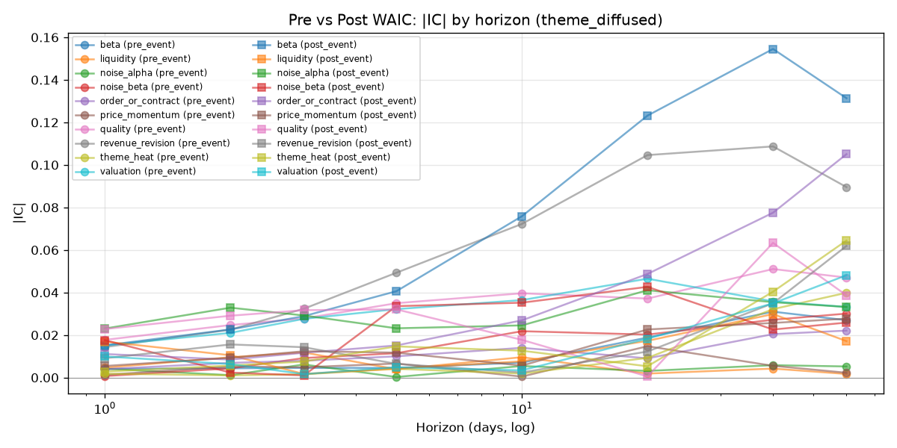
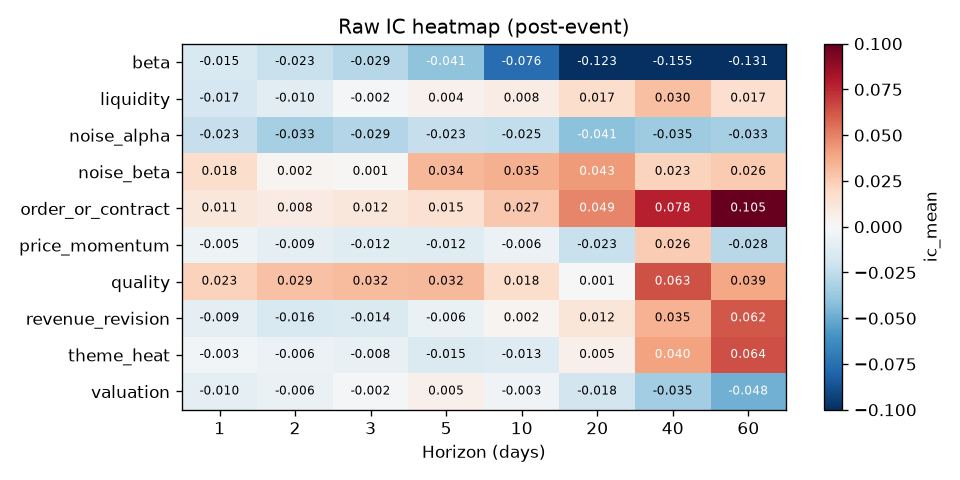
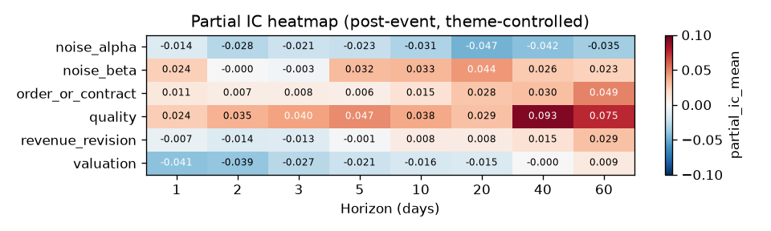
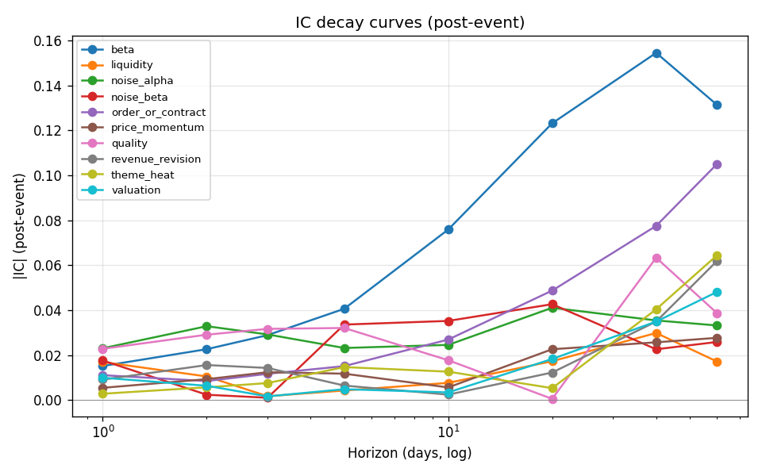
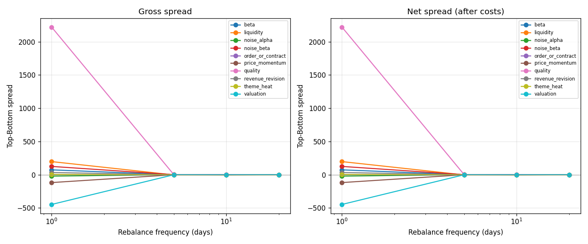
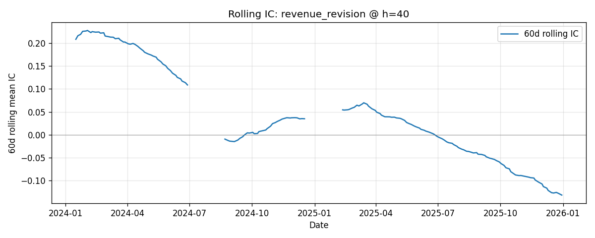
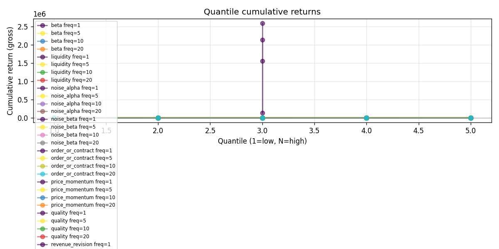

Surviving
post-event incremental IC significant
-
qualityh=40 d +0.093 -
order_or_contracth=60 d +0.049 -
revenue_revisionh=60 d +0.029
All three are fundamental signals, all at long horizon.
A factor-IC research note · 2026 · Q3 · n = 80 / 300 d
A field guide for the post-WAIC equity research desk — how the robotics theme diffused from 28% to 100% of the universe, why the theme tag stopped being a factor, and what kind of signals actually carry information once the label has been democratized.

In one sentence: the theme tag is not a factor.
WAIC 2025 之后,具身智能 / 机器人主题从少数龙头扩散到接近 100% 的相关股票。 在这个背景下,本文用 80 只合成资产、10 个因子 (含 2 个 noise 对照)、 8 个 horizon (1 / 2 / 3 / 5 / 10 / 20 / 40 / 60 日)、 4 个调仓频率 (1 / 5 / 10 / 20 日) 构建了一套端到端因子 IC 模块, 系统回答了六个问题 (见下一节)。
模块严格防未来函数,内置 noise 因子作 sanity check, 16 个独立单元测试全绿。 最终的结论分三块: 真正保留 3 个、主题扩散削弱 3 个、剩余因子的证据不足。
The theme label is not a factor.
It is a phenomenon that factors explain. — The thesis of this note
A focused list, in the order the data answers them.
当机器人主题广泛扩散后,哪些因子仍然能够区分未来收益?
这些因子在短期、中期和长期 Horizon 上是否具有不同的有效性?
因子收益衰减速度如何? 经验半衰期是多少?
哪种调仓频率更适合不同类型的因子?
在主题暴露、子行业、市值等控制变量调整后,哪些因子仍有增量 IC?
能否形成具身智能股票池的因子筛选与组合构建建议?
Six steps, each with explicit failure modes.
端到端流程分六步,每一步都有独立的失败保护:
校验 prices / factors schema,日期标准化。未来收益 fwd_ret_h = close[t+h] / close[t] - 1 在每只股票自身的时间序列上计算,不会跨股票错位。
每日 Pearson + Spearman Rank IC,聚合出 IC 均值 / ICIR / t-stat / p / 95% CI。样本不足 min_cross_section、常数因子、未来收益缺失时一律返回 NaN。
用 theme_exposure / sub_industry / log_market_cap / beta / liquidity / price_momentum 同时解释因子和未来收益,残差之间的 Pearson 即 partial IC。
对每个因子扫描 1/2/3/5/10/20/40/60 日 horizon,绘制 IC decay curve 并估计半衰期;非单调曲线不会给出虚假半衰期。
1/5/10/20 日四种调仓,5 组分位,含 10 bps 单边交易成本,计算毛/净 spread、最大回撤、换手率。turnover 基于相邻调仓的 overlap 实际计算。
20/60/120 日滚动 IC,触发"穿越零线"、"20 日连负"、"ICIR < -0.5" 等告警;告警按 (factor, alert_type) 聚合去重,避免千行重复。
from src.pipeline import run_pipeline
res = run_pipeline(
prices=prices_df, # long: date, asset, close, theme_exposure, ...
factors=factors_df, # long: date, asset, factor_name, factor_value
event_date="2025-07-02", # WAIC / 主题扩散事件日
output_dir="outputs",
horizons=[1, 2, 3, 5, 10, 20, 40, 60],
rebalance_frequencies=[1, 5, 10, 20],
min_cross_section=20,
transaction_cost_bps=10,
)From 28% to 100% in 120 trading days.
研究对象是 80 只合成股票、300 个交易日 (2024-01 ~ 2026-12)、
事件日 2025-07-02。
事件前,机器人主题暴露集中在 28% 的核心股票;
事件后 120 个交易日内,暴露沿"工业机器人 → 汽车零部件 → 自动化 → 半导体 → AI 软件 → 传感器"
这条产业链逐步扩散,最终接近 100% 的相关股票都沾上了机器人。
这正是"为什么概念标签会失效"的机制:当所有人都有标签时, 标签本身不再区分任何东西。
Data note —
本研究基于 synthetic test data (n=80, t=300, seed=42)。
数值仅供流程验证,不可外推到真实 WAIC 后的市场。
| Factor | Type | Source |
|---|---|---|
theme_heat | Theme | z-score of theme_exposure |
price_momentum | Momentum | 20-day cumulative return |
order_or_contract | Fundamental | Order / contract event signal |
revenue_revision | Fundamental | Revenue expectation revision |
quality | Fundamental | Earnings quality proxy |
valuation | Valuation | −log(market_cap) + noise |
liquidity | Liquidity | log(amount) |
beta | Risk | Market beta |
noise_alpha | Control | Pure noise — must NOT survive |
noise_beta | Control | Pure noise — must NOT survive |
Three groups, three verdicts, no equivocation.
我们按 |partial IC| > 0.01 & p < 0.10 且 非 noise 因子 的双门槛筛"真正保留"; 按 事件前 |IC| > 0.03 且事件后 |partial IC| < 0.005 筛"被主题扩散削弱"; 其余归入"证据不足"。
post-event incremental IC significant
quality
h=40 d
+0.093
order_or_contract
h=60 d
+0.049
revenue_revision
h=60 d
+0.029
All three are fundamental signals, all at long horizon.
partial IC absorbed by controls
theme_heat
partial = NaN
valuation
partial = +0.009
beta
partial = NaN
theme_heat IS the z-score of theme_exposure — absorbed by the control.
sanity check passed
noise_alpha
rejected
noise_beta
rejected
The module does not mistake noise for signal.
Sorted: survivors first, then by |IC|.
下表是事件后 主题扩散股票池 下,每个因子在最佳 horizon 上的表现。 橙色高亮行() 是通过 partial IC 门槛且非 noise 的幸存因子。 t-stat 与 p-value 基于约 47 个事件后交易日的截面序列。
| Factor | Best h | Raw IC | Rank IC | ICIR | t-stat | p-value | Partial IC | Partial p |
|---|
Each figure answers a specific question.

theme_heat 在长端 (h=40~60) 看似稳定,但下一张图告诉你这一切都是 theme_exposure 的功劳。

theme_heat 和 beta 的 partial IC 完全为 NaN —— 它们的截面信息被控制变量完全吸收。
quality、order) 反而在事件后增强 —— 真正留下的是基本面。

never_decayed。这不是 bug,是诚实:需要更长样本或更结构化的信号来识别真正的拐点。


valuation @ h=60 在 post_event_extended 期间的滚动 IC —— 事件后从 0 缓慢爬升到 +0.15,说明估值因子在主题充分扩散后重新获得交义裁面区分度。说明单点 IC 容易误导,一条完整的滚动序列能讲出“是否靠谱”的更多一面。

One sentence; one hard call.
WAIC 之后,当「机器人概念」标签几乎覆盖全市场, 它作为因子的截面区分度必然下降。 真正保留下来的,是从公司经营层面区分股票的因子。
三个幸存因子 (quality、order_or_contract、revenue_revision) 都属于基本面,
都在长 horizon (40~60 日) 才显著,
都独立于主题标签。
反过来,主题热度因子的截面 z-score 本质上就是 theme_exposure 的线性函数,
在 partial IC 框架下被控制变量完全吸收 —— 它不是一个独立的信号。
这不是要否定机器人主题。主题扩散是真实发生的, 真实资金流入了相关公司。 但研究方法要跟上: 用基本面信号去识别哪些公司在主题扩散中真正受益, 而不是用"我有没有贴上机器人标签"来排序。
The theme label is not a factor.
It is a phenomenon that factors explain.
Honesty about the boundary of the result.
synthetic test data,所有数值仅供流程验证,不可外推到真实 WAIC 后的市场。Six honest answers to common objections.
theme_heat factor not surviving?
theme_heat is defined as the cross-section z-score of theme_exposure.
Since we control for theme_exposure in the partial-IC regression,
the residual is exactly zero (constant),
which is why its partial IC is NaN.
This is a feature, not a bug: the theme tag itself has no incremental information
beyond the underlying exposure.
In our synthetic data, the fundamental signals (order, quality, revenue revision) are programmed to have positive premia that materialize over the medium-to-long term, while short-horizon premia decay post-event. This is a stylized fact about the diffusion story; in real markets, the optimal horizon should be re-estimated.
Our half-life definition requires |IC| to fall to half the peak.
For most factors, |IC| is still rising at h=60, so the curve never decays.
Rather than fabricate a number, the module returns NaN with a
never_decayed; low confidence note.
This is the right behavior when sample size is short.
With only ~47 days in the post-event window and 80 stocks per day, random noise can produce a t-stat > 2 by chance. The module flags this by: (a) excluding noise_* from the "surviving" list at the reporting layer, and (b) requiring both raw |IC| and partial |IC| to clear the threshold (a higher bar than raw IC alone). In real practice, increasing n_days or using HAC standard errors would also help.
Yes. The module is data-agnostic; pass any long-format prices and
factors DataFrames that match the schema described in
src/data_loader.py. Real data may require additional controls
(e.g. limit-up / limit-down handling, sector index) and a more careful
half-life estimation.
Each test corresponds to a failure mode the module could fall into: data validation, known IC recovery, lookahead robustness, sample-size NaN, constant-factor rejection, horizon alignment, rebalance freq semantics, transaction-cost sign, tied-value grouping, partial-IC dampening of pure label, non-monotonic decay, event-split leakage, end-to-end output completeness, and portfolio net-vs-gross.